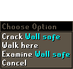

Thieving - Extra Features
Pyramid Plunder | Sorceress's Garden | Blackjacks – Lure and Knockout | H.A.M Dungeon
Rogues' Den | Dairy Cows | Summoning Familiars | 'Minor' Helpers | Training Hints and Tips
Quests giving Thieving experience | Random Events
Rogues' Den | Dairy Cows | Summoning Familiars | 'Minor' Helpers | Training Hints and Tips
Quests giving Thieving experience | Random Events
Pyramid Plunder
 Deep in the southern reaches of the Kharidian Desert is the city of Sophanem, home to a pair of magnificent pyramids. The pyramid of Jalsavrah has recently been opened to the Thieving public for them to test their mettle against the traps and dangers set in place by the pyramid's guardian mummy.
Deep in the southern reaches of the Kharidian Desert is the city of Sophanem, home to a pair of magnificent pyramids. The pyramid of Jalsavrah has recently been opened to the Thieving public for them to test their mettle against the traps and dangers set in place by the pyramid's guardian mummy.
Head here to find out more.
Sorceress's Garden
 Osman, spymaster and thief, has Thieving experience to impart to those who can get him some tasty sq'irks. Juicy, particularly if ripe, these sq'irks can only be obtained from the garden of the Sorceress who lives south-east of Al-Kharid.
Osman, spymaster and thief, has Thieving experience to impart to those who can get him some tasty sq'irks. Juicy, particularly if ripe, these sq'irks can only be obtained from the garden of the Sorceress who lives south-east of Al-Kharid.
Head here to find out more.
Blackjacks – Lure and Knockout
During The Feud, adventurers can learn a new method of Thieving - a method whereby they will take minimal damage and not get caught. You can get your hands on a blackjack during the quest, the Rogue Trader minigame, or by buying one from the trader near the kebab shop.
Right-clicking with a blackjack wielded gives the option 'Lure'. If you lure your target away from prying eyes, you should then go ahead and 'Knock out' the target, leaving a safe pickpocket with no chance of taking damage. Please remember, there is always a chance of failing to knock your target out.
Thieving from the people shown in the table below does not require a blackjack, but if you lure them and successfully knock them out, your pickpocketing success will be guaranteed. You will not be able to knock someone out if you do not have the Thieving level required to pickpocket them. Successfully knocking someone out will give the Thieving experience shown below:
| Name | Experience Gained |
| Villager | 8 |
| Bandit | 10 |
| Menaphite thug | 20 |
H.A.M Dungeon
The H.A.M dungeon is located north-west of Lumbridge, and is a perfect area for thieves to train their art. To get in, find the trapdoor in the damaged house, marked by an exclamation mark on the minimap.
Right-click on the trapdoor and select 'Pick lock'. If you fail to pick the lock, simply try again, and eventually it will open. Picking the lock earns 3.8 Thieving experience and access to the caves.

If you are bundled out of the camp and wake up outside, simply find your bearing using the minimap and head back to the trapdoor, pick the lock and enter the caves again to continue.
If you are put in jail, use your Thieving knowledge to pick the lock on the jail door, and if successful walk out into the area and continue (picking the jail door will also provide 3.8 Thieving experience).
It is worth noting that if you are wearing a full set of H.A.M robes, your chances of blending in and Thieving successfully will increase.
Rogues' Den

When your Thieving and Agility reach 50, you may want to try the Rogues' Den. The Den is located below the pub in Burthorpe, where you will find yourself able to buy certain items to help you with the den.
This maze occupies a fiendish space more than five times the size of Lumbridge and has more than 440 devilish traps, it is not for the faint hearted! However, the further you get through, the more experience in both Agility and Thieving you can receive!
If the maze isn't your thing, you can still train your Thieving in the starting area by trying to crack the safes.

If you are successful in looting the safes, you can obtain coins or gems.
Failure to crack the safe will trigger a trap, and you will take damage.
Dairy Cows
![[image: stealing a cowbell]](../img/main/kbase/skills/thieving/screenshots/stealing_cowbell1.gif "stealing a cowbell") While similar to pickpocketing, stealing bells from dairy cows may prove an amusing diversion for those who have reached a certain point in Cold War, provided you have level 15 Thieving. To procure a cow bell for yourself, simply right-click on a dairy cow and select 'Steal-cowbell'. Unless your clumsiness alerts these docile animals, you will be rewarded with 16 Thieving experience and a bell that you can play while cunningly disguised as a penguin. Naturally.
While similar to pickpocketing, stealing bells from dairy cows may prove an amusing diversion for those who have reached a certain point in Cold War, provided you have level 15 Thieving. To procure a cow bell for yourself, simply right-click on a dairy cow and select 'Steal-cowbell'. Unless your clumsiness alerts these docile animals, you will be rewarded with 16 Thieving experience and a bell that you can play while cunningly disguised as a penguin. Naturally.
If your frenzied fumbling wakens the cow from its usual grass- and cud-chewing, though, you'll receive a swift kick to the shins, simultaneously suffering a suitable injury to your pride for trying to steal from a cow.
Summoning Familiars
Using the Summoning skill, you'll find that there are a few familiars that might be useful for training your Thieving. Of particular note is the magpie, whose special move will boost your Thieving level.
'Minor' Helpers
 Bandit's Brew will help, as drinking it temporarily increases your Thieving level by one. The drink can be bought from the bandits in the Bandit Camp for 650gp.
Bandit's Brew will help, as drinking it temporarily increases your Thieving level by one. The drink can be bought from the bandits in the Bandit Camp for 650gp.
Gloves of silence, made by the fancy-dress store owner in Varrock - if you have two lots of black kebbit fur and 600gp - will increase the chance of success when pickpocketing. A warning however - the gloves will eventually wear out if you are caught pick-pocketing too often!
| Item | Levels Required | ||||||||||||||||||
| Attack Bonuses | Defence Bonuses | Other | |||||||||||||||||
![[Image: Stab]](../img/main/kbase/table_text/stab1.gif "Stab") |
![[Image: Slash]](../img/main/kbase/table_text/slash1.gif "Slash") |
![[Image: Crush]](../img/main/kbase/table_text/crush1.gif "Crush") |
![[Image: Magic]](../img/main/kbase/table_text/magic1.gif "Magic") |
![[Image: Range]](../img/main/kbase/table_text/range1.gif "Range") |
|
|
|
|
|
![[Image: Summoning]](../img/main/kbase/table_text/summoning1.gif "Summoning") |
![[Image: Strength]](../img/main/kbase/table_text/strength1.gif "strength") |
![[Image: Prayer]](../img/main/kbase/table_text/prayer1.gif "Prayer") |
|||||||
![[image]](../img/main/kbase/skills/hunter/items/glovesofsilence.gif) Gloves of Silence |
54 |
+ 0 | + 0 | + 0 | + 0 | + 0 | + 0 | + 1 | + 2 | + 0 | + 0 | + 0 | + 0 | + 0 | |||||
Gloves of silence are damaged when you are caught pickpocketing, but they can be repaired. To check the state of your gloves, right-click on them and select 'Inspect'. If you'd like to fix them up a bit, use some more dark kebbit fur on them while you have a needle, thread and a knife in your inventory. This will restore them fully, although you must have a Crafting level of 64 to repair gloves of silence.
Training Hints and Tips
- When pickpocketing NPCs, try to lure and trap them in a room to limit their wandering.
- Find a quiet world so that there are no other players trying to kill the NPC that you are trying to steal from!
Quests giving Thieving experience
To view quests that reward you with Thieving experience, please see the Thieving Rewards.
Random Events
For a list of random events that can occur when Thieving, please refer to the Random Events section in the Manual.
Click here to view the Thieving FAQs

|
More articles in Thieving (Members Only)
|
|
|
Further Help
If this article does not help you, you may find the following sections of the RuneScape site helpful:
|
|